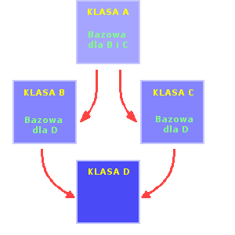

| << Poprzednia czêœæ kursu Strona g³ówna Spis Nastêpna czêœæ kursu >> |
Jak nietrudno siê domyœliæ, dziedziczenie zastosowane na masow¹ skalê ³atwo mo¿e doprowadziæ do powstania wielu ró¿nych œmiesznych sytuacji. Jedn¹ z najprostszych, a wiêc i najczêœciej wystêpuj¹cych jest wielokrotne odziedziczenie przez jak¹œ klasê innej klasy. Mo¿e siê to zdarzyæ, jeœli jakaœ klasa D dziedziczy od co najmniej dwóch klas (np. B i C), z których ka¿da dziedziczy z kolei od jakiejœ klasy A.

Taki uk³ad nosi bardzo mi siê podobaj¹c¹ nazwê - krata klas. Jeœli chcesz komuœ zaszpanowaæ jeszcze bardziej "fachowym" okreœleniem, to powiedz mu o skierowanym grafie acyklicznym. Pewnie trudno by³oby ci wymyœliæ na poczekaniu jak¹œ konkretn¹ programistyczn¹ sytuacjê, w której by takie "cuœ" wyst¹pi³o, aczkolwiek mo¿esz mi uwierzyæ na s³owo, ¿e wystêpuje, i to wcale nierzadko ;-).
Spróbujmy sobie tak¹ sytuacjê przedstawiæ przy pomocy przyk³adowego kodu:
|
class A { public: int a; }; class C : public A { public: int c; }; class B : public A { public: int b; }; class D : public B, C { public: int d; }; |
Komplikacji, jakich sobie w³aœnie narobiliœmy, na razie mo¿emy nie dostrzegaæ. Ale w momencie, gdy spróbujemy sobie wyobraziæ, jakie sk³adowe s¹ dostêpne w klasie D, ju¿ nie bêdzie tak ró¿owo. No bo jakie s¹ te sk³adowe? Na pewno w klasie D mamy dostêp do d (¿adna rewelacja), na pewno mamy dostêp do bezpoœrednio dziedziczonych zmiennych b i c. Jak siê zapewne domyœlasz, poœrednio dziedzimy równie¿ sk³adow¹ a. No w³aœnie - sk³adow¹? Lepszym okreœleniem by³oby "sk³adowe a", bowiem dziedziczymy tê zmienn¹ podwójnie - raz od klasy B, raz od C. I nie ma tu znaczenia, ¿e pochodz¹ one od jednej klasy A!
Mimo wszystko powy¿szy kod bêdzie jak najbardziej poprawny, dopóki nie odwo³amy siê w nim do sk³adowej a. Zróbmy to jednak, poniewa¿ nauka na b³êdach jest zazwyczaj bardzo skuteczna ;-). Oto kod, który siê nie skompiluje:
|
#include <iostream.h> int main() { D Obiekt; cout << Obiekt.a << endl; return 0; } |
Zapewne nasz kompilator powy¿sze wypociny skwituje pogardliwym komunikatem, zawieraj¹cym s³owo ambiguous (niejednoznaczny). Nic dziwnego - sk¹d ma biedak wiedzieæ, do której a chcemy siê odwo³aæ? Tej odziedziczonej od B czy tej od C?
Jedn¹ z mo¿liwoœci dogadania siê z kompilatorem bez stosowania przemocy ;-) jest jawne okreœlenie klasy sk³adowej, do której siê odwo³ujemy, za pomoc¹ operatora zasiêgu ::, poprzedzaj¹cego jak zwykle nazwê tej sk³adowej. Na przyk³ad tak:
|
#include <iostream.h> int main() { D Obiekt; cout << "Skladowa a od klasy B: " << Obiekt.B::a << endl; cout << "Skladowa a od klasy C: " << Obiekt.C::a << endl; return 0; } |
Jest to skuteczne, ale ma³o czytelne i doœæ k³opotliwe; w dodatku gdy tworzymy kratê klas, zazwyczaj nie zale¿y nam na tworzeniu kopii sk³adowych "superbazowej" klasy (u nas A). Ba, zdarza siê nawet, ¿e obecnoœæ dodatkowych sk³adowych najzwyczajniej w œwiecie przeszkadza (zajmuje dodatkow¹ pamiêæ itp.). I w tym miejscu pora wreszcie dowiedzieæ siê, co to takiego klasa wirtualna.
Otó¿ odwo³uj¹c siê do naszego "abecad³owego" przyk³adu: gdyby klasa A by³a wirtualna, to jej sk³adowe by³yby przez klasê D dziedziczone TYLKO RAZ (trochê nieprecyzyjne zdanie, ale nie chcê zaciemniaæ sprawy na samym pocz¹tku). Innymi s³owy, w klasie D by³by tylko jeden "egzemplarz" zmiennej a, a wiêc mo¿na by by³o siê do niego odwo³ywaæ bez wykorzystania operatora ::.
PrzejdŸmy do praktyki. Zmieniony kod bêdzie wygl¹da³ teraz tak:
|
class A { public: int a; }; class C : virtual public A { public: int c; }; class B : virtual public A { public: int b; }; class D : public B, C { public: int d; }; |
¯ebyœmy nie musieli siê trudziæ wyszukiwaniem ró¿nic: doda³em tylko dwa s³owa virtual po operatorze dziedziczenia w klasach C i B. W ten sposób klasa A sta³a siê klas¹ wirtualn¹. Byæ mo¿e wydaje ci siê dziwne, ¿e zrobiliœmy to w³aœnie w klasach C i B, a nie na przyk³ad w D. Dlatego od razu musimy sobie zdaæ sprawê z pewnej w³aœciwoœci klas wirtualnych:
Wirtualnoœæ klas jest wzglêdna - nie jest cech¹ klasy wirtualnej, tylko tych spoœród jej klas pochodnych, w których zadeklarowano tê klasê jako wirtualn¹.
To oznacza, ¿e sama klasa A "nie wie" o tym, ¿e jest wirtualna. Co wiêcej, dla niektórych klas pochodnych mo¿e ona byæ wirtualna, a dla innych nie. Wszystko zale¿y od tego, która z tych pochodnych klas zawiera s³ówko virtual.
Wracaj¹c do "ulepszonej" wersji naszych czterech klas - teraz, dysponuj¹c wirtualn¹ klas¹ bazow¹ D, mo¿emy wykonaæ tamten "sporny" kod bez ryzykowania pyskówki z kompilatorem:
|
#include <iostream.h> int main() { D Obiekt; cout << Obiekt.a << endl; return 0; } |
Dzia³a? Dzia³a. No to fajnie ;-).
Ktoœ dociekliwy móg³by jeszcze spytaæ, co takiego by siê sta³o, gdyby np. tylko w klasie B by³o virtual, natomiast w klasie C - nie. Wtedy kompilator niestety nie zrozumia³by, o co nam w³aœciwie chodzi³o - nie skojarzy³by klas C i B w "wirtualn¹ parê" i zmienna a znów by³aby dziedziczona podwójnie, a wiêc wrócilibyœmy do z³owrogiego komunikatu o niejednoznacznoœci (praktycznie taka sama sytuacja, jak wtedy).
Jak doskonale wiemy, w przypadku niszczenia obiektu klasy pochodnej najpierw wywo³ywany jest destruktor klasy pochodnej, a nastêpnie - destruktor klasy bazowej. Jest to naturalne i oczywiste. Dlatego te¿ konia z rzêdem temu, kto wyt³umaczy, dlaczego nie jest tak w poni¿szym przyk³adzie:
|
#include <iostream.h> class Baza { int* wsk; Baza() { cout << "Konstruktor Bazy" << endl; wsk = new int[5]; } ~Baza() { cout << "Destruktor Bazy" << endl; delete[] wsk; } }; class Pochodna { int* nic; Pochodna() { cout << "Kostruktor Pochodnej" << endl; nic = new int[100]; } ~Pochodna() { cout << "Destruktor Pochodnej" << endl; delete[] nic; } }; int main() { Bazowa* lpObiekt = new Pochodna; delete lpObiekt; return 0; } |
Wynik? Dla przysz³ego w³aœciciela konia z rzêdem oczywisty, pozosta³ym pewnie siê wyda dziwny:
|
Konstruktor Bazy Kostruktor Pochodnej Destruktor Bazy |
Dlaczego nie ma wywo³ania destruktora klasy Pochodna? Jeœli jesteœ spostrzegawczy, to pewnie nie umknê³a ci pierwsza linijka funkcji main. Mamy w niej przypisanie wskaŸnika - œwie¿o utworzonegp obiektu klasy Pochodna - do wskaŸnika typu Bazowa. Przypisanie takie jest mo¿liwe, o czym wspomnieliœmy (byæ mo¿e ;-) ) w czêœci kursu o dziedziczeniu. Problem w tym, ¿e w momencie wykonania instrukcji delete lpObiekt kompilator nic nie wie o typie obiektu, wskazywanego przez ten wskaŸnik. Mo¿e to byæ zarówno Bazowa, jak i dowolna jej klasa pochodna. Dlatego kompilator domyœlnie przyjmuje, ¿e obiekt nale¿y do klasy bazowej i wywo³uje destruktor klasy Bazowa. Natomiast w klasie Bazowa nie ma ¿adnych informacji o tym, ¿e nale¿y jeszcze wywo³aæ destruktor klasy Pochodna.
Konsekwencje s¹ nader przykre. Nie ma wywo³anego destruktora, wiêc 100 cennych bajtów pamiêci operacyjnej idzie na wycieczkê i nie wraca. Wycieczek takich nie lubimy i nie bêdziemy tolerowaæ, wiêc trzeba wymyœliæ jakiœ sposób na zapobie¿enie takowym. Wspomnia³em o braku informacji o istnieniu destruktora klasy pochodnej, który trzeba wywo³aæ z klasy Bazowa przy niszczeniu obiektu, wskazywanego przez wskaŸnik do tej¿e klasy Bazowa. Mo¿emy wiêc tak¹ informacjê umieœciæ, a uczynimy to przy pomocy znanego nam ju¿ s³ówka virtual:
|
#include <iostream.h> class Baza { int* wsk; Baza() { cout << "Konstruktor Bazy" << endl; wsk = new int[5]; } virtual ~Baza() { cout << "Destruktor Bazy" << endl; delete[] wsk; } }; class Pochodna { int* nic; Pochodna() { cout << "Kostruktor Pochodnej" << endl; nic = new int[100]; } ~Pochodna() { cout << "Destruktor Pochodnej" << endl; delete[] nic; } }; // Funkcja main oczywiœcie zostaje jaka by³a |
Jedno ma³e virtual, a ile dobra ;-). Teraz oczywiœcie wszystko dzia³a, jak nale¿y:
|
Konstruktor Bazy Kostruktor Pochodnej Destruktor Pochodnej Destruktor Bazy |
Nasze magiczne s³ówko zmienia plan dzia³ania kompilatora podczas wywo³ywania delete lpObiekt. Wczeœniej kompilator po prostu wywo³ywa³ destruktor klasy Bazowa, po czym bezmyœlnie odpuszcza³ sobie dalsze dzia³anie, bo nie wiedzia³, ¿e coœ jeszcze musi zrobiæ. Tutaj nasze ma³e sprytne virtual sygnalizuje mu: te, kompilator - uwa¿aj, w tym wskaŸniku mo¿e siedzieæ obiekt klasy pochodnej, wiêc trzeba wtedy dodatkowo wywo³aæ jego w³asny destruktor. I kompilator robi, co mu ka¿¹: sprawdza, czy wskazywany obiekt jest klas¹ bazow¹ czy pochodn¹, w tym drugim przypadku wywo³uje destruktor klasy pochodnej, i dopiero potem destruktor klasy bazowej.
Jeœli twoja klasa pochodna ma jawny destruktor, to w jej klasie bazowej zadeklaruj koniecznie wirtualny destruktor.
Mo¿e jeszcze zaistnieæ sytuacja, ¿e w klasie pochodnej bêdziesz potrzebowa³ napisaæ destruktor, a w bazowej - nie. Wówczas bez chwili zastanowienia do klasy bazowej wrzuæ wirtualny destruktor - mo¿e on nawet nic konkretnego nie robiæ (pusty blok instrukcji), byle tylko by³ wirtualny.
Mo¿liwoœæ wskazywania przez wskaŸniki klasy bazowej na obiekty klasy pochodnej, a ogólnie mówi¹c: wykorzystywania wirtualnoœci, poszerza doœæ znacznie nasze programistyczne horyzonty. Dziêki temu mo¿emy nie tylko tworzyæ klasy dziedzicz¹ce cechy innych klas, ale równie¿ "unowoczeœniaæ" dzia³anie "starych" klas przez zastêpowanie "starych" funkcji "nowymi" ich wersjami. Przyjrzymy siê takiemu zastêpowaniu na najprostszym mo¿liwym przyk³adzie:
|
#include <iostream.h> class Stara { protected: int a; public: Stara(int na=0) { a=na; } virtual void Podaj() { cout << "a: " << a << endl; } }; class Nowa : public Stara { private: int b; public: Nowa(int na=0, int nb=0) : Stara(na) { b=nb; } void Podaj() { cout << "a: " << a << ", b: " << b << endl; } }; int main() { Stara *StaryObiekt, *NowyObiekt; StaryObiekt = new Stara(5); NowyObiekt = new Nowa(7,19); StaryObiekt->Podaj(); NowyObiekt->Podaj(); return 0; } |
Co otrzymujemy na ekranie?
|
a: 5 a: 7, b: 19 |
Mamy w powy¿szym programiku klasê Stara, posiadaj¹c¹ jedn¹ chronion¹ zmienn¹ sk³adow¹ a, oraz klasê Nowa, która oprócz dziedziczonej a posiada te¿ w³asn¹ sk³adow¹ b. Obydwie sk³adowe mog¹ byæ zainicjalizowane przy pomocy odpowiednich konstruktorów. Oprócz tego mamy metodê Podaj, s³u¿¹c¹ do wypisywania wartoœci tych sk³adowych. Klasa Stara posiada tylko sk³adow¹ a, wiêc jej metoda Podaj tylko tê jedn¹ sk³adow¹ wypisuje. Natomiast w klasie Nowa funkcja Podaj uwzglêdnia dodatkowo sk³adow¹ b.
W funkcji main mamy deklaracjê dwóch wskaŸników do klasy Stara. Jeden z nich wykorzystujemy do wskazania w³aœnie na obiekt klasy Stara (utworzony dynamicznie - zwalnianie pamiêci mo¿esz sobie dopisaæ sam, pamiêtaj¹c o wirtualnych destruktorach), drugi - do wskazania na obiekt klasy Nowa. Nastêpnie przez te wskaŸniki wywo³ujemy metodê Podaj. Program wykona siê zgodnie z nasz¹ intuicj¹ - dla wskaŸnika StaryObiekt wywo³a Podaj z klasy Stara, dla NowyObiekt - z klasy Nowa.
Co zaœ sta³oby siê, gdyby usun¹æ s³ówko virtual sprzed definicji metody Podaj w klasie Stara? Wtedy, czego powinieneœ ju¿ domyœliæ siê sam, podczas dziedziczenia "stara" wersja Podaj zosta³aby po prostu przes³oniêta przez jej wersjê z klasy Nowa. Natomiast przy wywo³ywaniu tej metody przez wskaŸnik do klasy Stara kompilator po prostu by siê pogubi³, bo nie wiedzia³by, jakiej klasy jest de facto obiekt wskazywany. Tymczasem s³owo virtual sygnalizuje mu, ¿e gdzieœ w innej klasie mo¿e wyst¹piæ redefinicja funkcji Podaj i przy wywo³ywaniu tej¿e funkcji przez wskaŸnik nale¿y poszukaæ tej innej wersji.
"Nowa" wersja funkcji, której "stara" definicja zosta³a oznaczona jako wirtualna, sama równie¿ automatycznie staje siê wirtualna. Mo¿emy wiêc i tê "now¹" wersjê oznaczyæ s³owem virtual, ale nie musimy.
Nie pomyœl sobie przypadkiem, ¿e wirtualnoœæ funkcji zmienia regu³y przys³aniania "starej" wersji przez "now¹". Tamta "stara" wersja nadal jest dostêpna, oczywiœcie za pomoc¹ operatora ::. Wirtualnoœæ wp³ywa praktycznie tylko na to, co dzieje siê przy wywo³ywaniu funkcji przez "uniwersalny" wskaŸnik:
|
int main() { Stara *StaryObiekt, *NowyObiekt; StaryObiekt = new Stara(5); NowyObiekt = new Nowa(7,19); StaryObiekt->Podaj(); NowyObiekt->Podaj(); // "stara" wersja wci¹¿ dostêpna NowyObiekt->Stara::Podaj(); return 0; } |
Tym razem efekt jest taki:
|
a: 5 a: 7, b: 19 a: 7 |
Czasami klasê projektuje siê tak, ¿eby stanowi³a ona tylko coœ w rodzaju makiety, która bêdzie s³u¿y³a tylko do przekazania innym klasom pewnych cech, natomiast sama nie bêdzie stanowiæ samodzielnej klasy. Klasê tak¹ nazywamy abstrakcyjn¹, poniewa¿ nie da siê utworzyæ obiektów takiej klasy. Przynajmniej jedna z funkcji sk³adowych takiej klasy jest czysto wirtualna, tzn. nie posiada ¿adnej definicji, a jest w³aœnie tylko "makiet¹". Klasa, która dziedziczy od klasy abstrakcyjnej MUSI tak¹ czysto wirtualn¹ funkcjê zdefiniowaæ sama - chyba, ¿e sama te¿ ma byæ abstrakcyjna.
Jeœli klasa, dziedzicz¹ca od klasy abstrakcyjnej nie zdefiniuje czysto wirtualnych metod z klasy bazowej, to sama automatycznie staje siê klas¹ abstrakcyjn¹.
¯eby pokazaæ to na przyk³adzie, stworzymy sobie jak¹œ klasê abstrakcyjn¹. Nie bêdzie ona mia³a ¿adnych sk³adowych, a jedynie funkcjê czysto wirtualn¹ Podaj. Deklaracja takiej funkcji wygl¹da doœæ œmiesznie i myl¹co, ale nic to. Do dzie³a:
|
class Abstrakcja { public: virtual void Podaj() = 0; }; |
Jak widaæ, ró¿nica miêdzy funkcj¹ czysto wirtualn¹ a "zwyk³¹" wirtualn¹ polega w deklaracji wy³¹cznie na przyrównaniu jej do zera. Twórcom jêzyka chodzi³o zapewne o podkreœlenie faktu, ¿e funkcja taka nic nie robi, niemniej jestem w stanie wyobraziæ sobie zrêczniejsz¹ notacjê dla funkcji czysto wirtualnej. Mniejsza zreszt¹ o to. Teraz pora na "w³aœciw¹" klasê:
|
class Wlasciwa : public Abstrakcja { public: void Podaj() { cout << "Tu funkcja Podaj" << endl; } }; |
Nie mo¿emy stworzyæ zmiennej typu Abstrakcja (zgodnie z tym, co powiedzieliœmy sobie wy¿ej), ale wskaŸnik do takiego typu - owszem, i nawet takie rozwi¹zanie jest praktycznie podstawowym powodem wprowadzenia funkcji czysto wirtualnych w C++. WskaŸnik taki bêdzie zawsze zawiera³ adres obiektu jakiejœ klasy pochodnej od Abstrakcja (oczywiœcie o ile nie bêdzie pusty).
Jak widzimy na powy¿szym przyk³adzie, funkcja czysto wirtualna spe³nia w praktyce tak¹ sam¹ rolê, jak "zwyk³a" wirtualna, jedyna ró¿nica polega na tym, ¿e na kompilatorze wymuszana jest definicja danej funkcji w klasie pochodnej (przy "zwyk³ych" wirtualnych redefinicja jest opcjonalna).
Jeœli nie za³apa³eœ nic z funkcji/klas wirtualnych, to niekoniecznie musisz podcinaæ sobie ¿y³y tudzie¿ robiæ coœ równie weso³ego - ma³o kto ³apie za pierwszym razem, tak te¿ zreszt¹ by³o i w przypadku autora tego kursu ;-).
| << Poprzednia czêœæ kursu Strona g³ówna Spis Nastêpna czêœæ kursu >> |